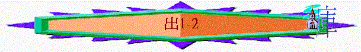

|
帶
來 歸 我 |
||
|
拯救選民—脫離轄制 |
設立舊約—建立關係 |
建造會幕—與人同住 |
|
1-18 |
19-24:8 |
24:9-40:38 |
І.緒論
一.名稱
〜希伯來文聖經，以本書卷首句，「他們的名字」為名稱
〜七十士譯本則稱為〈Exodos〉「出來」的意思，指神帶領以色列人從埃及出來
二.作者—摩西
三.與創世記的關係
1.揀選的不斷延伸
「耶和華對亞伯蘭說：「你要離開本地、本族、父家，往我所要指示你的地去。我必叫你成為大國。我必賜福給你，叫你的名為大；你也要叫別人得福。」創12:1-2
「耶和華向以撒顯現，說：「你不要下埃及去，要住在我所指示你的地。你寄居在這地，我必與你同在，賜福給你，因為我要將這些地都賜給你和你的後裔。我必堅定我向你父亞伯拉罕所起的誓。我要加增你的後裔，像天上的星那樣多，又要將這些地都賜給你的後裔。並且地上萬國必因你的後裔得福」創26:2-4
「雅各從巴但亞蘭回來，神又向他顯現，賜福與他，且對他說：「你的名原是雅各，從今以後不要再叫雅各，要叫以色列。」這樣，他就改名叫以色列。神又對他說：「我是全能的神；你要生養眾多，將來有一族和多國的民從你而生，又有君王從你而出。我所賜給亞伯拉罕和以撒的地，我要賜給你與你的後裔。」」創35:9-12
「我向埃及人所行的事，你們都看見了，且看見我如鷹將你們背在翅膀上，帶來歸我。如今你們若實在聽從我的話，遵守我的約，就要在萬民中作屬我的子民，因為全地都是我的。」出19:4-5
〜在創世記中，神主動揀選了亞伯拉罕、以撒、雅各成為他們的神，他們的後裔也必得福，而至出埃及記，這揀選繼續延續至他們的後裔----以色列人，由創世記集中三位被揀選的先祖人物，至出埃及集中整群被揀選的以色列民身上。
2.應許的續漸落實
「約瑟對他弟兄們說：「我要死了，但神必定看顧你們，領你們從這地上去，到他起誓所應許給亞伯拉罕、以撒、雅各之地。」約瑟叫以色列的子孫起誓說：「神必定看顧你們；你們要把我的骸骨從這裡搬上去。」」創50:24-25
「摩西把約瑟的骸骨一同帶去；因為約瑟曾叫以色列人嚴嚴地起誓，對他們說：「神必眷顧你們，你們要把我的骸骨從這裡一同帶上去。」」出13:19
〜神曾應許亞伯拉罕、以撒、亞雅各有迦南地，有後裔的，與他們立約，約瑟也相信，所以當他死時，他信神必看顧他的兄弟與後裔，領他們離開埃及，到應許之地，就吩咐他們要將自己的骸骨從埃及地搬出來，果然，在出埃及記中，他們真的離開了埃及，約瑟的骸骨也領出來，他們開始邁向進入應許地的旅程了。
3.預言的準確應驗
「耶和華對亞伯蘭說：「你要的確知道，你的後裔必寄居別人的地，又服事那地的人；那地的人要苦待他們四百年。並且他們所要服事的那國，我要懲罰，後來他們必帶著許多財物從那裡出來。但你要享大壽數，平平安安的歸到你列祖那裡，被人埋葬。到了第四代，他們必回到此地，因為亞摩利人的罪孽還沒有滿盈。」」創15:13-16
「以色列人住在埃及共有四百三十年。」出12:40
〜神曾在創世記中對亞伯拉罕預言他後裔必在埃及受苦四百年，果然在出埃及記中應驗了(他們可能有三十年受埃及王恩待，有四百年受苦，所以在埃及日子共四百三十年)
四.內容
〜可分為三段
1.1-18 :有很多「救贖」「出來」等字眼，講述神如何救以色列人離開埃及，領他們出來的經過。
2.19-24:有很多「約」「吩咐」「不可」「要」「守」等字眼，講及神在西乃頒佈十誡、典章，設立舊約，並要求他們遵守。
3.25-40:有很多「幕」「祭司」等字眼，講述神設立會幕的樣式與經過
五.主題：帶來歸我
「『我向埃及人所行的事，你們都看見了，且看見我如鷹將你們背在翅膀上，帶來歸我。如今你們若實在聽從我的話，遵守我的約，就要在萬民中作屬我的子民，因為全地都是我的。你們要歸我作祭司的國度，為聖潔的國民。』這些話你要告訴以色列人。」」出19:4-6
〜神為何要救贖選民離開埃及？其中一個真正的原因是神要領祂的子民從埃及拜偶像之地出來，建立一個屬神的國度，要作以色列人的神，以色列人要歸於神，也讓別國得知神的偉大與榮耀，萬民也因選民得福。
〜如何「帶來歸我」？
1.要使他們重得自由：使為奴的得釋放，不再受敵神群體轄制
2.要與他們建立關係：他們得釋放後，有權選擇是否與神建立關係，而人神關係緊密的關鍵在於約，若人順從約，聽從約的吩咐(十誡與典章)，追求聖潔，神願作他們的神，他們也是神的子民。
3.要住在百姓們中間：更深彼此相屬關係就是神住在人中間，神透過會幕、約櫃的設立表明神住在他們中間，他們已屬於神，可以事奉祂，親近祂及向祂守節。
〜以上3點也構成出埃及記的內容與分段
六.分段
帶來歸我
1.拯救選民----脫離轄制(1-18)
2.設立舊約----建立關係(19-24:8)
3.建造會幕----與人同住(24:9-40:38)
七.真理
1.基督的預表
「摩西曾說：『主神要從你們弟兄中間給你們興起一位先知像我，凡他向你們所說的，你們都要聽從。」徒3:22
「那曾對以色列人說『神要從你們弟兄中間給你們興起一位先知像我』的，就是這位摩西。」徒7:37
「摩西為僕人，在神的全家誠然盡忠，為要證明將來必傳說的事。但基督為兒子，治理神的家；我們若將可誇的盼望和膽量堅持到底，便是他的家了。」來:5-6
〜摩西的生平與事奉，與耶穌在地上所行所作的甚相似，原來在舊約中，已早將摩西預表將來要來的基督，要來的使者及拯救主。
2.摩西的學習
「他為那設立他的盡忠，如同摩西在神的全家盡忠一樣。」來3:2
〜摩西不是一下子可以成為忠心的管家，在出埃及記中可以看到他有挫敗，他也有成長，更有神要他學的功課，這也成為我們的提醒，教我們怎樣可以在信仰事奉中可更突破，可以更長進！
3.舊約的精華
「凡事都不可虧欠人，惟有彼此相愛要常以為虧欠；因為愛人的，就完全了律法。像那不可姦淫，不可殺人，不可偷盜，不可貪婪，或有別的誡命，都包在愛人如己這一句話之內了。愛是不加害與人的，所以愛就完全了律法。」羅13:8-10
〜舊約的十試與典章被記錄在出埃及記中，從這些吩咐中我們看到律法的精意，也教我們如何過一個愛人如己，愛神的生活。
4.會幕的啟示
「他們供奉的事本是天上事的形狀和影像，正如摩西將要造帳幕的時候，蒙神警戒他，說：『你要謹慎，作各樣的物件都要照著在山上指示你的樣式。』」來8:5
「原來前約有禮拜的條例和屬世界的聖幕。因為有預備的帳幕，頭一層叫作聖所，裡面有燈臺、桌子，和陳設餅。」來9:1-2
「聖靈用此指明，頭一層帳幕仍存的時候，進入至聖所的路還未顯明。那頭一層帳幕作現今的一個表樣，所獻的禮物和祭物，就著良心說，都不能叫禮拜的人得以完全。這些事，連那飲食和諸般洗濯的規矩，都不過是屬肉體的條例，命定到振興的時候為止。」來9:8-10
〜會幕是一個表樣，一個參考，使我們更明白新約基督這位大祭司所成就的事情，也明白將來真正屬天敬拜，與神建立關係的方法與內容，更能令我們從「影兒」中更體會新約的美。
5.真神的認識
「神曉諭摩西說：「我是耶和華。」出6:2
「我要以你們為我的百姓，我也要作你們的神。你們要知道我是耶和華你們的神，是救你們脫離埃及人之重擔的。」出6:7
「那時，摩西和以色列人向耶和華唱歌說：我要向耶和華歌唱，因他大大戰勝，將馬和騎馬的投在海中。耶和華是我的力量，我的詩歌，也成了我的拯救。這是我的神，我要讚美他，是我父親的神，我要尊崇他。」出15:1-2
〜以色列人在起初對神的認識是模糊的，但經過十災與紅海，他們深深體會神不單是列祖的神，也是以色列的神，耶和華是祂的名，祂是自有永有的全能者！
П.內容
一.拯救選民----脫離轄制(1-18)
「我是耶和華你們的神，曾將你們從埃及地領出來，使你們不作埃及人的奴僕；我也折斷你們所負的軛，叫你們挺身而走。」」利26:13
「你就心高氣傲，忘記耶和華你的神，就是將你從埃及地為奴之家領出來的，」申8:14
〜此段很多「領出來」「救贖」等字眼
〜而其它舊約經卷，形容以色列人在埃及地是為奴的，作僕人，沒有自由，受轄制的，神又如何使他們自由，以致真正成為神的子民？
1.拯救的需要(1)
A.在埃及的原因
「以色列的眾子，各帶家眷，和雅各一同來到埃及。他們的名字記在下面。」出1:1
「凡從雅各而生的，共有七十人。約瑟已經在埃及。」1:5
a.保存性命
「現在，不要因為把我賣到這裡自憂自恨。這是神差我在你們以先來，為要保全生命。現在這地的饑荒已經二年了，還在五年不能耕種，不能收成。神差我在你們以先來，為要給你們存留餘種在世上，又要大施拯救，保全你們的生命。這樣看來，差我到這裡來的不是你們，乃是神。他又使我如法老的父，作他全家的主，並埃及全地的宰相。」創45:5-8
b.時候未滿
「耶和華對亞伯蘭說：「你要的確知道，你的後裔必寄居別人的地，又服事那地的人；那地的人要苦待他們四百年。」創15:13
「到了第四代，他們必回到此地，因為亞摩利人的罪孽還沒有滿盈。」」創15:16
〜神有祂的時候，選民得保性命，但不即刻離開埃及進應許地，因為時候還未滿足，要等待迦南人的罪惡滿盈，就要領選民出來，進入迦南地管教，刑罰敗壞的人。
c.得著財寶
「並且他們所要服事的那國，我要懲罰，後來他們必帶著許多財物從那裡出來。」創15:14
d.學習寄居
「要記念你在埃及地作過奴僕，耶和華你的神將你救贖；因此，我今日吩咐你這件事。」申15:15
「你也要記念你在埃及地作過奴僕，所以我吩咐你這樣行。」申24:22
e.生養眾多
「以色列人生養眾多，並且繁茂，極其強盛，滿了那地。」出1:7
〜要進入迦南地，必須孕育出一班人數眾多而強大的軍隊，選民在埃及地就生養眾多，成為強盛的一群。
B.離埃及的需要
「過了多年，埃及王死了。以色列人因做苦工，就歎息哀求，他們的哀聲達於神。」2:23
「耶和華將你們從埃及領出來，脫離鐵爐，要特作自己產業的子民，像今日一樣。」申4:20
〜除了因為時候滿足，他們要離開埃及後，也因為他們在埃及地實在太苦，如住在燒著的鐵爐，沒有自由，不能出來，卻受苦楚，所以神要救他們出來，他們有甚麼苦況？
a.轉念的忌恨
「如今我將這地擺在你們面前；你們要進去得這地，就是耶和華向你們列祖亞伯拉罕、以撒、雅各起誓應許賜給他們和他們後裔為業之地。」「那時，我對你們說：『管理你們的重任，我獨自擔當不起。耶和華你們的神使你們多起來。看哪，你們今日像天上的星那樣多。」出1:8-10
「使敵人的心轉去恨他的百姓，並用詭計待他的僕人。」詩105:25
〜昔日在約瑟時代，埃及人善待以色列人，但有不認識的新王起來後，卻忌恨選民，怕他們比自己的國民強盛，就使出巧計苦待他們。
b.長久的苦待
「埃及人嚴嚴地使以色列人做工，」出1:13
「過了多年，埃及王死了。以色列人因做苦工，就歎息哀求，他們的哀聲達於神。」2:23
〜要選民成為奴僕，沒自由，用苦工想他們勞苦至死，而這種苦況是「過了多年」，不知有幾多年，但應是長期(因創世記預言他們受苦四百年)
c.無情的殺害
「你們為希伯來婦人收生，看他們臨盆的時候，若是男孩，就把他殺了；若是女孩，就留他存活。」但是收生婆敬畏神，不照埃及王的吩咐行，竟存留男孩的性命。埃及王召了收生婆來，說：「你們為什麼做這事，存留男孩的性命呢？」」出1:16-18
「法老吩咐他的眾民說：「以色列人所生的男孩，你們都要丟在河裡；一切的女孩，你們要存留他的性命。」」1:22
「他用詭計待我們的宗族，苦害我們的祖宗，叫他們丟棄嬰孩，使嬰孩不能存活。」徒7:19
〜他們在苦工中反而人數越發增多，所以埃及王要殺害以色列的男嬰，但收生婆卻敬畏神不從王的吩咐。
d.真神的眷顧
「過了多年，埃及王死了。以色列人因做苦工，就歎息哀求，他們的哀聲達於神。神聽見他們的哀聲，就記念他與亞伯拉罕、以撒、雅各所立的約。神看顧以色列人，也知道他們的苦情。」2:23-25
(1)祂聽見----選民的哀歎
(2)祂記念----對人的承諾
(3)祂看顧----卑微的百姓
(4)祂明白----他們的苦情
2.首領的預備(2-4)
「這摩西就是百姓棄絕說『誰立你作我們的首領和審判官』的；神卻藉那在荊棘中顯現之使者的手差派他作首領、作救贖的。」徒7:35
〜如何拯救選民出埃及？神有祂奇妙的方法，祂用一人----摩西成為首領，帶領選民離開埃及。
〜但摩西要成為首領，是要經過很多的磨練的學習，神又如何陶造他，栽培他成長呢？
A.性命的拯救
「有一個利未家的人娶了一個利未女子為妻。那女人懷孕，生一個兒子，見他俊美，就藏了他三個月，後來不能再藏，就取了一個蒲草箱，抹上石漆和石油，將孩子放在裡頭，把箱子擱在河邊的蘆荻中。」出2:1-3
「法老的女兒來到河邊洗澡，他的使女們在河邊行走。他看見箱子在蘆荻中，就打發一個婢女拿來。他打開箱子，看見那孩子。孩子哭了，他就可憐他，說：「這是希伯來人的一個孩子。」」2:5-6
「法老的女兒對他說：「你把這孩子抱去，為我奶他，我必給你工價。」婦人就抱了孩子去奶他。孩子漸長，婦人把他帶到法老的女兒那裡，就作了他的兒子。他給孩子起名叫摩西，意思說：「因我把他從水裡拉出來。」」2:9-10
〜原本以色列人所生的男孩要丟在河�堙A但摩西的母親將他收藏，後被法老女兒收養。
〜而摩西的名字就有「從水�堜唹X來」的意思，作為一個將要拯救選民的首領，他的出身遭遇與名字，已有拯救的標記，他長大之後，也不會忘記他是死�堸k生的人，百姓也是如他一樣的。
B.知識的裝備
「摩西學了埃及人一切的學問，說話行事都有才能。」徒7:22
〜摩西不是一生出來就有領袖的能力，他也要受埃及的教育，因著奇妙地被埃及王女兒收養，所以他可以學了埃及人一切學問，自小已裝備成為有才能，有言語的人，預備為神行各樣善事。
C.信仰的建立
「孩子的姊姊對法老的女兒說：「我去在希伯來婦人中叫一個奶媽來，為你奶這孩子，可以不可以？」法老的女兒說：「可以。」童女就去叫了孩子的母親來。」出2:7-8
「他將到四十歲，心中起意去看望他的弟兄以色列人；」徒7:23
「摩西因著信，長大了就不肯稱為法老女兒之子。他寧可和神的百姓同受苦害，也不願暫時享受罪中之樂。他看為基督受的凌辱比埃及的財物更寶貴，因他想望所要得的賞賜。他因著信，就離開埃及，不怕王怒；因為他恆心忍耐，如同看見那不能看見的主。」來11:24-27
〜摩西若單受埃及文化的教育，他可能只是成為一個拜偶像的本土埃及人，但也巧妙地，他的奶媽就是他的母親，有理由相信，他的生母將以色列文化及先祖的神介紹摩西知道。
〜他自小就開始建立對神的信心，信神對列祖應許，有更美的應許，信仰使他寧可輕看富貴，也要與他的兄弟同往應許地。
〜而使徒行傳更說明他自小已清楚神要用他拯救選民
D.生命的磨練
〜但單是有知識，有信仰概念是不可成為神所用的人，摩西仍欠生命的質數，神藉一些方法陶造他的生命與性情。
a.經歷挫折
「後來，摩西長大，他出去到他弟兄那裡，看他們的重擔，見一個埃及人打希伯來人的一個弟兄。他左右觀看，見沒有人，就把埃及人打死了，藏在沙土裡。第二天他出去，見有兩個希伯來人爭鬥，就對那欺負人的說：「你為什麼打你同族的人呢？」那人說：「誰立你作我們的首領和審判官呢？難道你要殺我，像殺那埃及人嗎？」摩西便懼怕，說：「這事必是被人知道了。」法老聽見這事，就想殺摩西，但摩西躲避法老，逃往米甸地居住。」出2:11-15
「到了那裡，見他們一個人受冤屈，就護庇他，為那受欺壓的人報仇，打死了那埃及人。他以為弟兄必明白神是藉他的手搭救他們；他們卻不明白。」徒7:24-25
〜摩西心�堸_意要探望弟兄，但見有一人受屈，他為弟兄報仇打死埃及人，但換來弟兄不接受，埃及人要追殺他，在這挫敗的經歷中，他或許會學到以下功課
(1) 血氣的不能
〜用報仇、用拳頭的方法拯救弟兄，這血氣的方法根本是不能成就拯救工作。
(2)
靠己的失敗
〜他一直知道神要藉他救選民，在弟兄被欺負時，他用自己的方法解，沒有尋求神，結果換來的是失敗。
(3) 期望的幻滅
〜他對神的托負是有期望的，他可能認為四十歲的自己可以成為領袖，他認為弟兄會明白，他認為自己有能力解決以色列人的問題，結果他對事奉的時間、別人的認同、理想的果效完全幻滅！
(4)自我的認識
〜他為何要離開埃及往米甸去，因為他怕埃及法老的追殺，從前不怕為兄弟出頭的摩西，現在卻感受到自己原來也是怕死的人，在神面前再沒有可誇！
b.曠野寄居
「法老聽見這事，就想殺摩西，但摩西躲避法老，逃往米甸地居住。」2:15
「摩西甘心和那人同住；那人把他的女兒西坡拉給摩西為妻。西坡拉生了一個兒子，摩西給他起名叫革舜，意思說：「因我在外邦作了寄居的。」」2:21-22
〜摩西後來逃往米甸曠野地寄居，他學到甚麼功課
(1) 知道甚麼是曠野
〜摩西的使命是要領民出埃及至迦南地，但要到迦南地，必經大而可怕的曠野，作為首領，他己預先在曠野四十年，為百姓鋪準備的道
(2)
知道甚麼是降卑
〜他要甘心寄居在外邦人中，他要由王子成為幫岳父工作的人，他真正學到僕人降卑的功課。
(3)知道甚麼是牧養
「摩西牧養他岳父米甸祭司葉忒羅的羊群；一日領羊群往野外去，到了神的山，就是何烈山。」3:1
〜摩西在米甸的主要工作是甚麼？應是負責每天牧養羊群，他真正體會不同羊群的特性，如何餵養，帶領他們成長，而四十年後，他的角色也是牧羊人，引領以色列的群羊到豐盛之地得福氣。